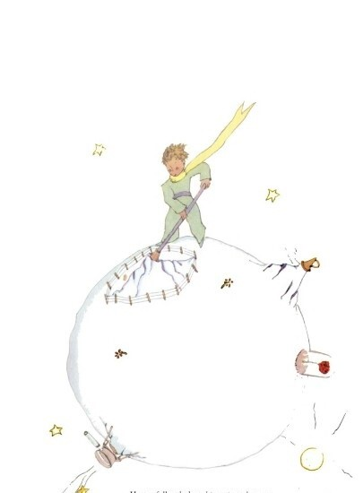
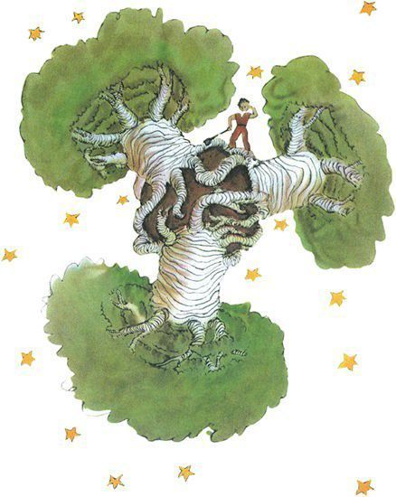

En consecuencia, hay buenas semillas de plantas buenas y malas semillas de plantas malas, pero...
Por eso se deben arrancar.


"En todos los planetas hay plantas buenas y plantas malas"
Las semillas son invisibles.
Permanecen dormidas hasta que quieren despertar.
Entonces, esa pequeña semilla se estira hacia arriba, hacia el sol.
Si se trata solo de un brote de rabano o de una ramita de un rosal,
puede uno dejarla crecer donde quiera, pero cuando se trata de una planta mala,
uno debe destruirla lo mas pronto posible.